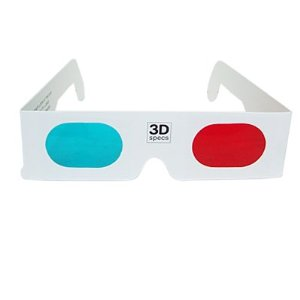
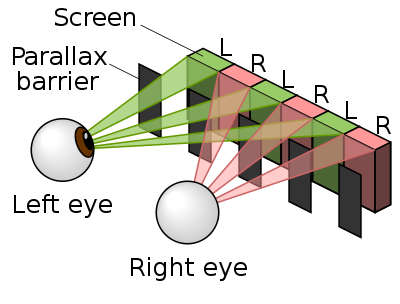
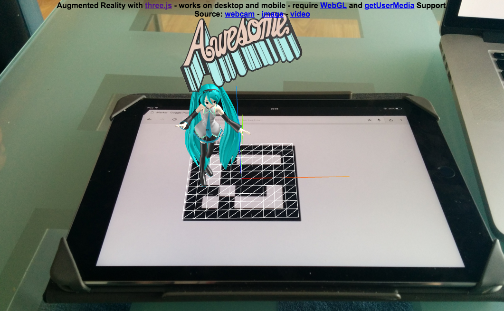

Alternate Reality in the Web
What is Alternate Reality ?
It is a mix!
- Virtual Reality
- Augmented Reality
Devices Of Virtual Reality
Steam VR

Occulus

Hololens
- Made by microsoft
- No Wire!
Google Glass
- Made by Google
- Got stopped in early 2015
Google Cardboard
- Made by Google
- Cheap, use your own phone
- "can build it from a pizza cardboard"
What is the Difference ?
Between VR and AR
Virtual Reality

Virtual Reality
- Nothing of the real world
- Total immersion in another world
You are teleported in another reality
Augmented Reality
- Still see the real world around you
- Overlay additional content
- like special effect for the real world
You Augment Your Reality
How To Code For Alternate Reality
Some Exotic ones, for the fun of it :)
Anaglyph - Retro style

- Old fashion
- Super low tech
- Available in three.js
Parallax Barrier - wikipedia
- Based on a device placed in front of an image source
- No need for the viewer to wear 3D glasses
- Similar to lenticular printing
- Available in three.js
Parallax Barrier - Theory

Stereo Effect
- Work on mobile devices!
- Made popular by google cardboard
- Cheap to buy (as low as $2)
- Available in three.js
WebVR
- It is standard! link
- google and mozilla are working hard on it
- Available in three.js
Which One To Pick ?
- Too many possibilities, can't code them all
- Should focus on the experience
- Not on coding support for each VR devices
Which One To Pick ?
- Discard the exotic ones
- Focus on the popular ones
- i.e. occulus, cardboard, and plain phone
All done in WebVR Boilerplate. GREAT!
What Is The WebVR Boilerplate ?
- Support all popular VR devices
- i.e. occulus, google cardboard, and plain phone
- WebVR Boilerplate code available on github
- Reuse it, so you can focus on your own stuff
WebVR Boilerplate: a Safe Choice
You got what you need to start coding VR
Coding AR is Not as simple as VR :(
- Most VR already in three.js
- WebVR is a standard in progress
AR isn't there yet... Working hard tho
What is Needed For AR
- Get a camera
- Analyze it to localize AR Markers
- Generate 3d on top
- Finally display both, 3d and video, on the screen
What is Missing ?
- Camera can be access via WebRTC/getUserMedia API - spec - example
- Localisation of AR Markers
- many small libraries
- no clear winner
- We decided to put ourselved to work
AR Needs More Than VR
- AR needs a camera to capture reality
- AR needs to localize marker
First handling the camera
Camera Feed
- Simple color video like Webcam
- webrtc/getUserMedia - spec - example
- Supported on Desktop and Android mobile
- Not IOS unfortunatly - caniuse link
Open source is important at Daqri
- Feb 2015 - Daqri acquired AR Toolkit
- Before it has a free and a pro version
We opened source it all!
More About Open Source at Daqri
- Will opensource four.js, our core library to do AR
- We keep improving ARToolkit
- We will opensource result
- e.g. more robust tracking algos, new features
WebAR - Augmented Reality Solution for the Web
- Allow to easily do AR on top of three.js
- Our experiment to do AR in a Web page
- All open source, so you can use it.
WebAR on github
WebAR - Results
- It works!
- It is usable today
- free as a chery on top :)
- It EVEN runs in mobile phones.
Augmented reality in browsers is for real
WebAR - What about Phones ?
- WebAR is running on Phone (YES you read it well)
- People already got mobile phones
- So it can provide AR to your user today
WebAR - More about Phones
- Not the perfect experience
- Not as good as Specific devices: e.g. hololens or daqri smart helmet
- They provide high quality hand free experience
- But Phone available today, no need to wait
Availability is a powerful arguments
WebAR is cool, let's see what we can do
WebAR's Examples
- Various AR applications built with WebAR
- Show possible usages and hopefully inspire more
- Good places to get starting
Being Awesome - Basic Example

Being Awesome - Description
- Display a trivial 3D on top of a marker
- Basic Example
- Written to be simple to understand
Being Awesome - in Action
Being Awesome - Improvements ?
- May be the base for a FPS Game in AR
- People are identified by markers
- They shoot each other in AR
- You display special effect on top
Data Visualisation - Serious applications

Data Visualisation - Description
- Put a marker near a piece of equipment
- e.g. stoge, fridge, your car, up to you
- Display live information about it
Provide useful info right when you need them
Data Visualisation - on Nexus 9
Data Visualisation - Improvements ?
- You could put many makers in your office/house
- I added one near my microwave
- It shows me instructions in AR
- e.g. cooking timing, which button to push
Actually useful in Real Life
- Everybody walk around in a conference with marker
- Each personn got a different marker, It identifies him
- Display Info From a Database on per-marker basis
- No more need to dictate your email and so on
You can share contact fast and without error
Last by not least, Hatsune Miku in AR! :)
Hatsune Miku Dancing in AR

Hatsune Miku - Description
- Hatsune Miku is a mascotte in AR
- You have to do it :)
- model by @superhoge
Now what if you want to use it yourself ?
How we implemented it
A Spoon of opensource
Display WebGL with three.js
- Three.js javascript library from mrdoob
- Leading library to display Webgl
- MIT license, so easy to integrate
- Runs on desktop and mobile.
- Javascript port of artoolkit
- Compiled with EMScripten (c++ to js compiler)
- Opensource it all obviously
WebAR - Extensions For Augmented Reality
- Follow the threex models for three.js Extensions
- wrote 50 of them already, proven to work
- Simple, standalone, accurate
WebAR - Extensions For Augmented Reality
Simple, easy to access, dont hesitate to try